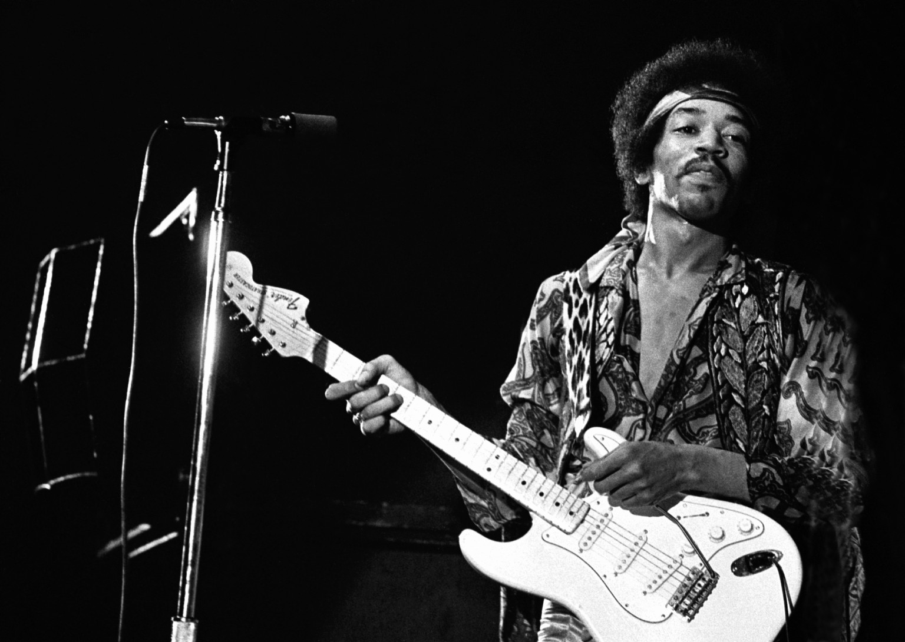

Are you new to Townsville?
General information about Townsville is available at - Info Centre Townsville has a population of about 200,000 and is growing at about 1 suburb per year, so there is a lot of musical activity. All private schools and most government schools have music teachers. The larger private schools are Townsville Grammar, the Cathedral School and Ryan Catholic College. The larger public high schools are Kirwan and Pimlico.Music Teachers Association of Qld is a good source of information for local music teachers.The Townsville Branch contact is the Secretary (Ms Margery Jorgensen) Phone (07) 47790382 Email: mjo11750@bigpond.net.au Another active teachers’ organisation is the Kodaly Music Education Institute of Australia - Kodaly Information on their Townsville Chapter can be found at - Chapter Some local businesses also employ or assist music teachers. Try these - Employ and Assist Busking is permitted at several public spaces around the city with a Buskers Permit from the city council - phone 4727 9680. There is no age limit, but buskers 16 and under will need to be accompanied by a parent/guardian.
Townsville Community Music Centre
Based in Townsville, North Qld, the Music Centre presents concerts and workshops throughout the year, in a diverse range of genres including classical, jazz, folk, blues, world and contemporary music, featuring touring artists and locally-based professional and emerging artists. Civic Theatre Contact Details:- Phone 07 4724 2086 Mobile 0402 255 182 Postal Address PO Box 1006, Townsville, Qld 4810 Address Townsville Civic Theatre, 41 Boundary Street, Townsville, Qld 4810 email admin@townsvillemusic.org.au Looking Back - The first 30 years! Print music The Townsville Community Music Centre celebrated its 30th year in 2013. It has been constantly changing over the years to keep up to date with the musical tastes and needs of the Townsville community. As part of the relocation of the Music Centre to the Civic Theatre, Bronia Renison and Jean Dartnall, both librarians, have assessed the old collection of sheet music, books and recorded music which the centre has been storing, unused, for many years. Sometimes older things have to be discarded to make way for the new, but the Music Centre is aware that older material may still have value. The National Library of Australia has an online catalogue (TROVE) that lists not only its own holdings but also information about items held by many other libraries around Australia. Using this catalogue Bronia and Jean have identified at least 150 items of music that are not held by any of the country's major libraries. These items have been donated to the National Library to include in their collection and thus made available to all historians and musicians. Also discovered in the old collection were some pieces relevant to North Queensland. Local musicians performed these at a musical social afternoon on Sunday April 21st in C2 at the Civic Theatre. The remaining sheet music, books and CDs were put on display and distributed free of charge to the local music community.
